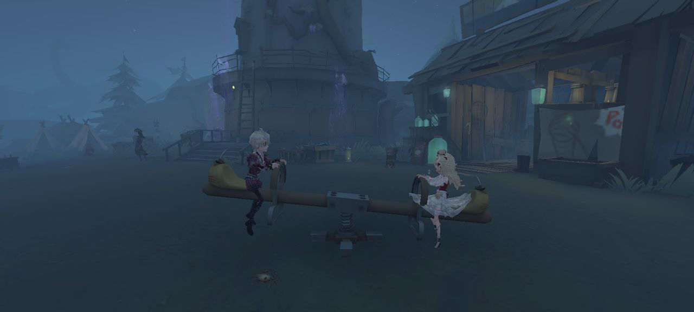
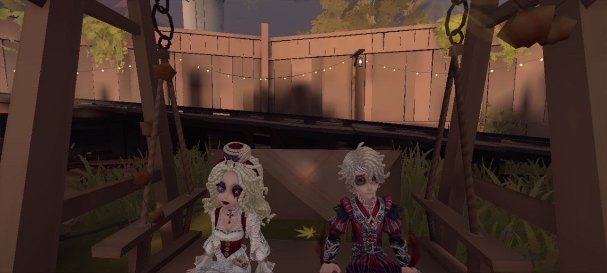
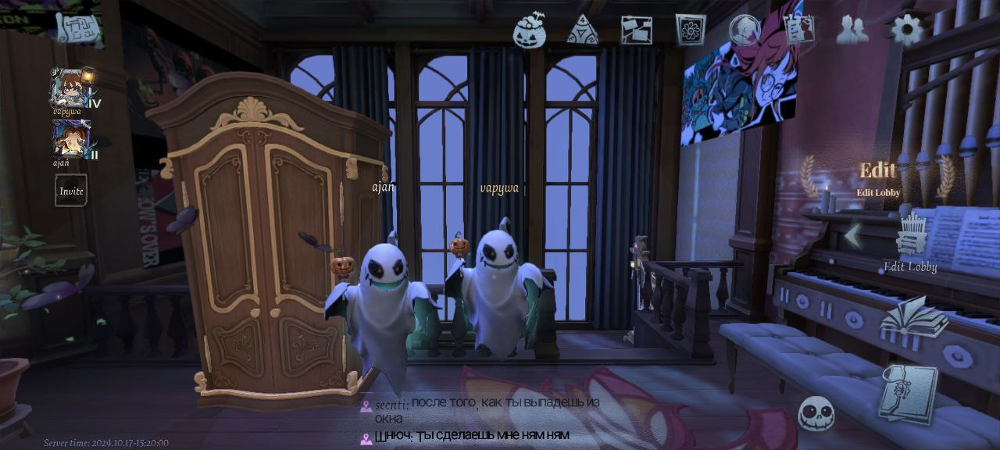
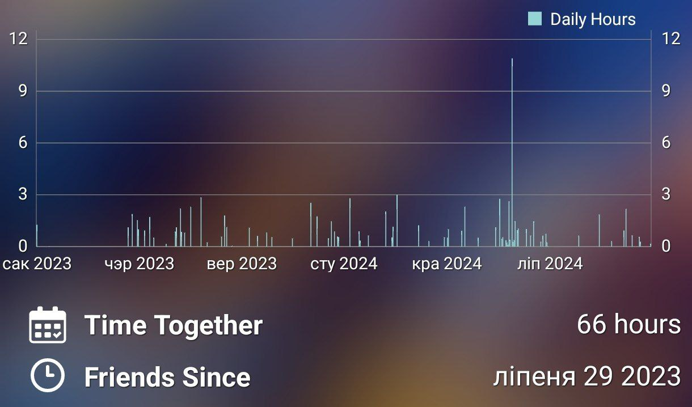
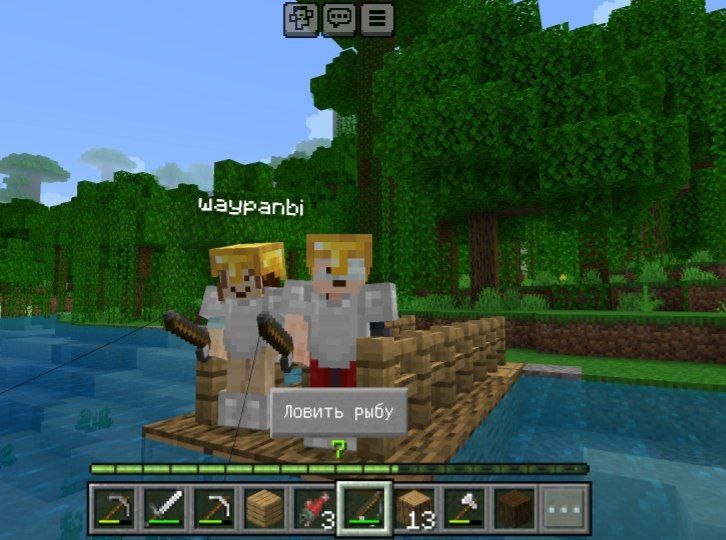

Мне заўседы падабалася праводзіць час з табой. Гэта - лепшая рэч майго дня. З табой цяпло, утульна і я ведаю, што поруч з табой - бяспечна. Таму тут я выйрашыла сабраць ўсе тое, што мы рабілі разам, як светлыя ўспаміны і нацякі на яшчэ большую колькасць імгненняў удвох.
Ідэн


 Мы ігралі ў ідэн разам прыкладна гадзін 150, калі лічыць дастаткова груба. Я шукала дзе знайсці інфармацыю пра тое, колькі гадзін ты правёў іграючы з чалавекам, але такога, нажаль, няма :( Я рада, што ты паказала мне гэтую ігру і церплячы вучыла ўсім механікам. А яшчэ я рада, што цябе, як і мне, падобаецца іграць разам.
Званкі
Затое дакладна можна падлічыць колькі гадзін мы з табой праразмаўлялі па тэлефону. Толькі для гэтага патрэбна гадзін 15 свабоднага часу і неверагодная вытрымка. У сярэнім я слухаю твой цудоўны голас 50г. на месяц. Ці ты размаўляеш са мной 3000 хвілін. Ці мы абмяркоўваем праблемы святавога масштабу 180000 секунд кожны месяц. Я баюся паглыбляцца ў дакладнасці...
Рэйв

І важную частку ў нашым сумесным часе разам займае прагляд ютуба, фільмаў, анімэшак. Хоць знайсці нешта здаецца тысячу разоў немагчымым, усе зусілля вартыя таго. Бо люой, нават самы непрыемны кантэнт разам з табой стае казачна смешным. Мне падобаюцца стэндапы, хорары, треш тік-токі, усе, што мы калісці глядзелі з табой. У адрозненні ад ідэну ў рэйве легка даведацца данныя пра час, праведзенны з сябрамі.
Майнкрафт

Мне шкада, што мы рэдка іграем у майнкрафт, але кожны раз, як іграем гэта весела і камфортна. Мне падобаецца адказваць на твае пытанні, прыдумываць разам наш новы домік, шукаць новыя далягляды, рыбку лавіць, калі ты захішчаеш мяне (пасля таго, як паабяцала захішчаць цябе я)
Варта б, канешне, уставіць геншын, дурака і марскі бой, праўда я больш чым упэўнена, што не знайду нармальных скріноў з тых часоў. Энівэй, я памятаю і пра тое, як ты клікала мяне іграць ў марскі бой калі не было сіл на больш актыўныя заняткі, і як ад нуды мы кідаліся картамі, і салюты ў геншыне, і босаў разам. Усе гэта мае асобнае, важнае месца ў маёй памяці. Дзякуй цябе за ўсі эмоцыі, якія ты даруеш мне.